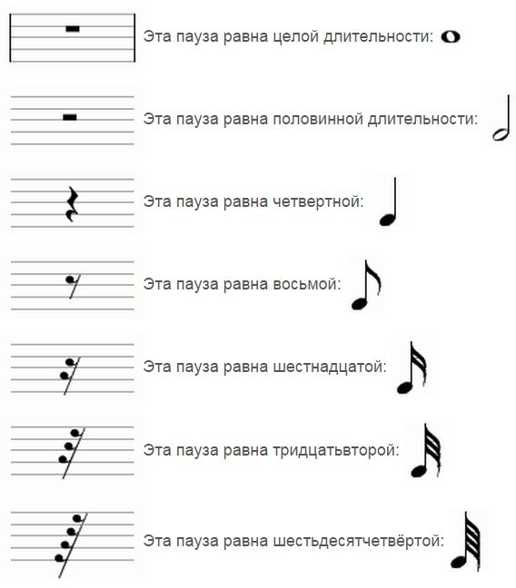

Урок 10. Паузы. Устойчивые и неустойчивые ступени.
Теория
В музыке пауза — это знак молчания, который имеет определённую длительность, как и ноты.
- Паузы бывают целые, половинные, четвертные, восьмые и шестнадцатые — каждая соответствует длительности одноимённой ноты.
- Устойчивые ступени — это ноты, которые звучат спокойно и завершённо (например, До, Ми, Соль в До-мажоре).
- Неустойчивые ступени — это ноты, которые стремятся разрешиться в устойчивые (например, Ре, Фа, Ля, Си в До-мажоре).
Паузы делают музыку выразительной, помогают разделять фразы и акцентировать внимание на важных моментах.
В мелодии часто чередуются устойчивые и неустойчивые ступени, а паузы могут использоваться для создания ритмического рисунка.
Умение правильно использовать паузы и различать устойчивые и неустойчивые ступени важно для выразительного исполнения музыки.
Упражнения
- Распознавание паузы: Определите длительность паузы по её обозначению (Целая пауза — длинная тишина; Четвертная пауза — короткая тишина; Восьмая пауза — очень короткая тишина).
- Пение и паузы: Пропойте мелодию, делая паузы в указанных местах (До, — (пауза), Ми, Соль, — (пауза), До).
Аудио-примеры
Примеры пауз разной длительности:
Мелодия с паузами и устойчивыми ступенями:
Визуальные примеры
Обозначения пауз на нотном стане:

Устойчивые и неустойчивые ступени в гамме: